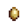

Entenei
Zur Navigation springen
Zur Suche springen
| Entenei | |||||||||||||||||||||||
|  | |||||||||||||||||||||||
| Ist immer noch warm. | |||||||||||||||||||||||
| Information | |||||||||||||||||||||||
| Quelle | Enten | ||||||||||||||||||||||
| Energie / Gesundheit |
|
||||||||||||||||||||||
|
|||||||||||||||||||||||
|
|||||||||||||||||||||||
Ein Entenei ist ein Tierprodukt von einer Ente, das für einen Grundpreis von  95 G verkauft werden kann. In dem Brutkasten, eines großen oder Luxus Hühnerstalls, kann es ausgebrütet werden.
95 G verkauft werden kann. In dem Brutkasten, eines großen oder Luxus Hühnerstalls, kann es ausgebrütet werden.
Als Geschenk
| Reaktionen der Dorfbewohner
| |
|---|---|
| Mag es | |
| Neutral | |
| Gefällt nicht | |
| Hasst es | |
Bündel
Ein Entenei kann für das  Tierbündel in der Speisekammer verwendet werden.
Tierbündel in der Speisekammer verwendet werden.
Handwerkswaren
- Siehe auch: Rentabilität von Tierprodukten
| Bild | Name | Beschreibung | Zutaten | Ausrüstung | Dauer | Verkaufserlös |
|---|---|---|---|---|---|---|
| Enten-Mayonnaise | Eine dicke, gelbe Mayonnaise. | Mayonnaise-Maschine |
Rezepte
Eier werden in den folgenden Gerichten verwendet:
| Bild | Name | Beschreibung | Zutaten | Energie / Gesundheit | Buff(s) | Buffdauer | Rezeptquelle | Verkaufspreis | |||
|---|---|---|---|---|---|---|---|---|---|---|---|
| Spiegelei | Leicht angebraten. | N/A | N/A | 1. Bauernhausausbau | |||||||
| Omelett | Es ist super luftig. | N/A | N/A |
|
|||||||
| Pfannkuchen | Ein Stapel luftig weicher Pfannkuchen. |
|
|||||||||
| Schokoladentorte | Mächtig und saftig, mit einer dicken Karamellglasur. | N/A | N/A |
|
|||||||
| Pinke Torte | Kleine herzförmige Süßigkeiten sind darauf verstreut. | N/A | N/A |
|
|||||||
| Kekse | Sehr süß und knusprig. | N/A | N/A |
|
|||||||
| Blaubeertörtchen | Fein und erfrischend. | N/A | N/A |
|
|||||||
| Krabbenkuchen | Krabbe, Brotkrümel und Eier, die zu einer Frikadelle geformt und dann goldbraun gebraten werden. |
|
Aufträge
Wird für keinen Auftrag benötigt.
History
| Tiere und deren Erzeugnisse | |
|---|---|
| Hühnerstall-Tiere | Dinosaurier (Dinosaurier-Ei) • Ente (Entenei • Entenfeder) • Goldenes Huhn (Gold-Ei) • Hase (Wolle • Hasenpfote) • Huhn (Ei • Großes Ei • Braunes Ei • Großes Braunes Ei) • Schattenhuhn (Schattenei) |
| Stall-Tiere | Kuh (Milch • Große Milch) • Schaf (Wolle) • Schwein (Trüffel) • Strauß (Straußenei) • Ziege (Ziegenmilch • Große Ziegenmilch) |
| Fischteich | Fisch (Fischlaich) |
| Schleim-Stall-Tiere | Schleime (Schleim • Schleimball • Schleim-Ei) |
| Haustiere | Hund • Katze • Pferd |